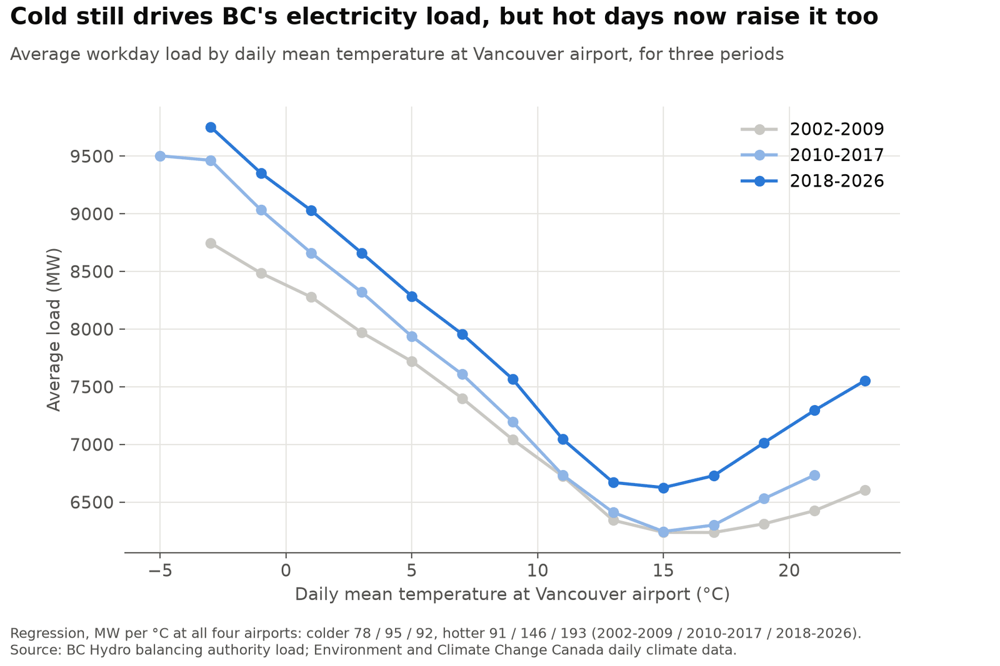
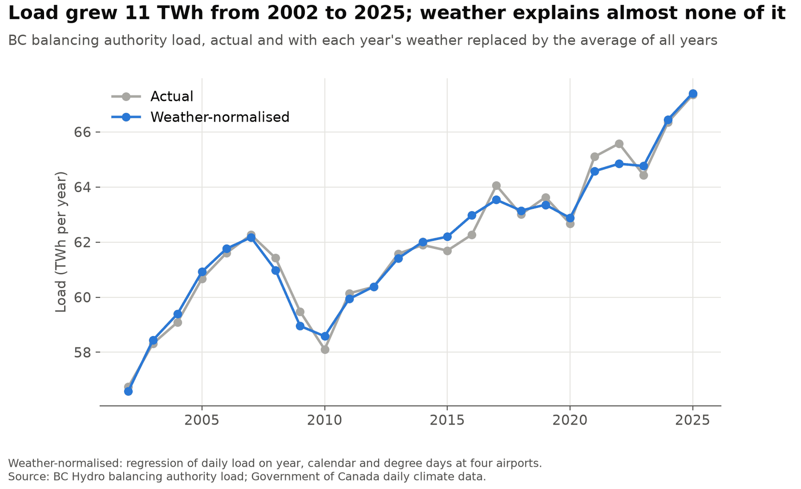
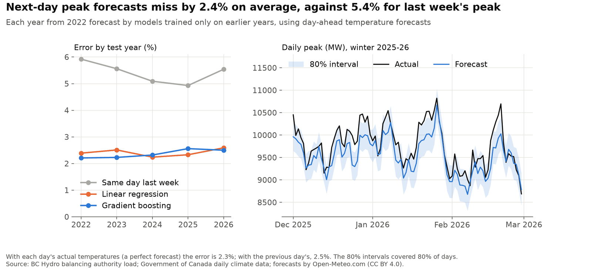

Electricity load, weather and next-day peaks in BC
An independent look at British Columbia's electricity load since 2002, built from public data in Python. It asks how much of the growth comes from the weather, and how well tomorrow's peak can be forecast from what is known today.

What it shows
- Growth is structural, not weather. Weather-normalised load rose from 56.6 TWh in 2002 to 67.4 TWh in 2025 (+19%). Weather moved any single year by less than 0.8 TWh.
- Cold drives load, and hot days now matter too. A day 1 °C colder at all four airports (below 18 °C) adds about 92 MW in 2018-2026, up from 78 MW in 2002-2009. A day 1 °C hotter (above 18 °C) adds about 193 MW, up from 91 MW. This fits the spread of air conditioning and heat pumps, though the data cannot show the cause.
- Next-day peaks can be forecast to within about 2.3%. Over 2021 to September 2026, gradient boosting and a linear regression on the same inputs both missed the daily peak by 2.3% on average, against 5.4% for the peak a week earlier. The linear model does as well as the boosted trees, and the 80% intervals covered 78% of days.

How it works
Hourly load is turned into each day's average and peak. A least-squares regression of daily average load on a separate level for each year, heating and cooling degrees below and above 18 °C at the Vancouver, Victoria, Kamloops and Prince George airports (with separate effects for 2002-2009, 2010-2017 and 2018-2026), and calendar effects explains 96% of the daily variation. Each year's weather-normalised load replaces that year's weather effect with the effect of the average weather over 2002-2025.
The forecast test is a rolling-origin backtest: each year from 2021 to 2026 is forecast by models trained only on earlier years, using what is known the evening before. It compares the peak on the same day last week, a linear regression and gradient boosting. The 80% interval is the forecast plus or minus the 80th percentile of the errors the model made the year before.

Limits
- The backtest uses each day's actual temperatures, so it is optimistic. With the previous day's temperatures instead, the average error rises from 2.3% to 2.5%; a real day-ahead forecast would fall between the two.
- Four airports stand in for the province, with no population weighting.
- "Structural" is everything that is not weather: population and economic growth, the 2009 recession, the pandemic, industrial customers opening and closing, and electrification. The year levels do not separate these.
- Days above 18 °C are rare in BC, and 2018-2026 includes the 2021 heat dome, so the hot-weather effects are less precise than the cold-weather ones.
Data
Hourly balancing authority load from BC Hydro's historical transmission data, 2002 to September 2026. BC Hydro's data is not openly licensed, so the repository and this page show only charts and summaries made from it. Daily mean temperatures at four airports from Government of Canada daily climate data. Analysis in Python with pandas and scikit-learn; code under the MIT licence.
Contains information licensed under the Open Government Licence - Canada.